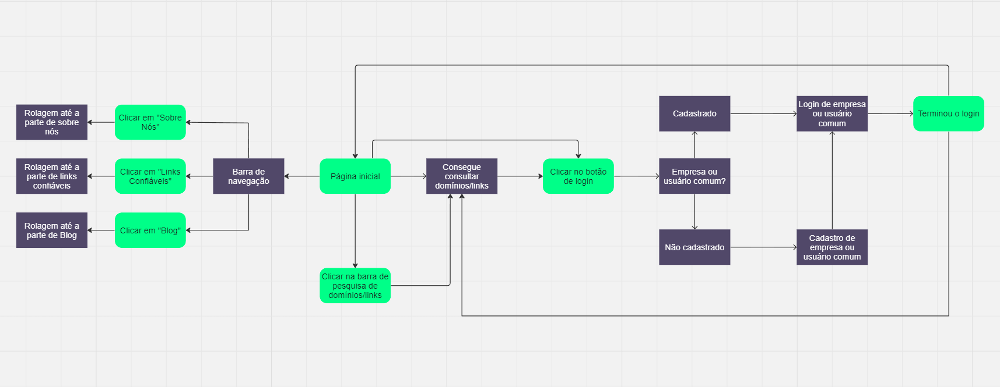

Introdução
Informações Gerais
- Projeto: Phishing Detector
- Repositório GitHub: Phishing Detector
- Membros da equipe:
Contexto
Problema
A internet, apesar de ser uma ferramenta útil e informativa, também pode ser um lugar perigoso. Os ataques de phishing estão se tornando cada vez mais sofisticados e comuns, colocando em risco a segurança dos usuários comuns e até mesmo empresas. Muitas vezes, esses ataques são tão bem disfarçados que é difícil para um usuário comum identificar a ameaça.
Objetivos
O software Phishing Detector está sendo desenvolvido para combater esse problema. Através da identificação e alerta sobre domínios e links maliciosos, o Phishing Detector visa aumentar a segurança dos usuários na internet, por meio da verificação de domínios e links maliciosos, permitindo que eles naveguem com confiança e tranquilidade. Ademais, temos o objetivo de direcionar esta ferramenta também para empresas, para que estas possam cadastrar seus domínios e obter visibilidade e confiabilidade através da nossa ferramenta.
Justificativa
A necessidade de uma ferramenta como o Phishing Detector é evidente. Com o número crescente de pessoas utilizando a internet para uma variedade de atividades, desde compras online até operações bancárias, a segurança online nunca foi tão importante. O Phishing Detector oferece uma solução robusta, rápida e eficaz para proteger os usuários contra ameaças de phishing.
Público-alvo
O Phishing Detector é destinado a todos os usuários de internet que desejam proteger suas informações pessoais e navegar na web com segurança. Isso inclui indivíduos e até mesmo empresas, que usam a internet para compras online, operações bancárias, trabalho e muito mais. Este é destinado a uma ampla gama de usuários, desde aqueles com pouco ou nenhum conhecimento prévio no assunto até os especialistas na área, por conta disso, nosso público-alvo é amplamente variado, se dedicando a todas as pessoas que desejam navegar com segurança na web.
Concepção
Especificações do Projeto
Documentação das especificações do projeto.
Apresente as especificações do projeto, incluindo as histórias de usuário e os requisitos funcionais e não funcionais.
Histórias de Usuários
Com base na análise das personas foram identificadas as seguintes histórias de usuários:
| EU COMO... | QUERO/PRECISO... | PARA... |
|---|---|---|
| Administrador da aplicação | Ser alertado quando uma empresa estiver se cadastrando no site | Verificar se é um cadastro lícito |
| Desenvolvedor da aplicação | Entregar aos usuários uma aplicação simples e eficaz | Tenham fácil acesso a uma navegação mais segura na web |
| Usuário | Haja uma verificação dos links inseridos de sites que estou visitando | Eu poder navegar na internet com segurança |
Requisitos
As tabelas que se seguem apresentam os requisitos funcionais e não funcionais que detalham o escopo do projeto.
Requisitos Funcionais
| ID | Descrição do Requisito |
|---|---|
| Verificação de URL | O site deve ser capaz de aceitar URLs inseridas pelos usuários e passá-las para a API para verificação. Isso pode ser feito através de um campo de entrada onde os usuários podem colar ou digitar a URL que desejam verificar. |
| Integração com API | O site deve ser capaz de aceitar URLs inseridas pelos usuários e passá-las para a API para verificação. Isso pode ser feito através de um campo de entrada onde os usuários podem colar ou digitar a URL que desejam verificar. |
| Apresentação dos Resultados | Após receber a resposta da API, o site deve apresentar os resultados de forma clara e compreensível para o usuário. Isso pode incluir indicar se a URL é segura ou não, e fornecer detalhes sobre a reputação do domínio e oferecer sugestões ou ações recomendadas. |
| Cadastro de Contas | O site deve permitir que tanto empresas quanto usuários criem uma conta, fornecendo informações relevantes como nome, endereço de e-mail e senha. Isso pode ser feito através de um formulário de inscrição. Após a criação da conta, as empresas devem ter a capacidade de adicionar links e domínios confiáveis ao seu perfil. Isso pode ser feito através de uma interface de usuário dedicada onde podem inserir URLs e domínios, que são então adicionados à sua lista de sites confiáveis. Além disso, tanto as empresas quanto os usuários devem ter a capacidade de votar na confiabilidade de links e domínios. Isso pode ser implementado através de um sistema de votação onde podem dar um “upvote” para sites confiáveis ou um “downvote” para sites não confiáveis. |
Requisitos Não-Funcionais
| ID | Descrição do Requisito | Prioridade |
|---|---|---|
| Usabilidade | O site deve ser fácil de usar, com uma interface intuitiva e responsiva que funciona bem em uma variedade de dispositivos e tamanhos de tela. | |
| Desempenho | O site deve ser capaz de pesquisar e informar rapidamente se um link/domínio é confiável ou não. | |
| Privacidade | O site deve respeitar a privacidade dos usuários, seguindo as leis e regulamentos aplicáveis sobre proteção de dados. Isso pode incluir medidas como permitir que os usuários excluam suas contas e todos os dados associados. |
Projeto de Interface
Artefatos relacionados com a interface e a interacão do usuário na proposta de solução.
User/Screen Flow
O fluxo de usuário (User Flow) é uma técnica que permite ao desenvolvedor mapear todo fluxo de telas do site ou app. Essa técnica funciona para alinhar os caminhos e as possíveis ações que o usuário pode fazer junto com os membros de sua equipe.
Wireframes
Os Wireframes são protótipos das telas da aplicação usados em design de interface para sugerir a estrutura de um site web e seu relacionamentos entre suas páginas. Um wireframe web é uma ilustração semelhante ao layout de elementos fundamentais na interface.
Clique aqui para visualizar.
Protótipo Interativo
O protótipo interativo apresenta o projeto de interfaces e permite ao usuário navegar pelas funcionalidades como se estivesse lidando com o software pronto.
Clique aqui para visualizar.
Metodologia
Detalhes sobre a organização do grupo e o ferramental empregado.
Nesta parte do documento, você deve apresentar a metodologia adotada pelo grupo, descrevendo o processo de trabalho baseado nas metodologias ágeis, a divisão de papéis e tarefas, as ferramentas empregadas e como foi realizada agestão de configuração do projeto via GitHub.
Coloque detalhes sobre o processo de Design Thinking e a implementação do Framework Scrum seguido pelo grupo. O grupo poderá fazer uso de ferramentas on-line para acompanhar o andamento do projeto, a execução das tarefas e o status de desenvolvimento da solução.
Gestão do Projeto
| Função. | Integrante | Descrição |
|---|---|---|
| Scrum Master | Karina | Responsável por garantir que a equipe siga as práticas e princípios do Scrum. Ajuda a equipe a se auto-organizar, remove obstáculos que possam estar impedindo a equipe de alcançar seus objetivos e trabalha para melhorar a eficiência da equipe. |
| Product Owner | Henrique | Tem a visão do produto e trabalha para garantir que a equipe esteja trabalhando nas coisas certas com base no valor para o negócio. Ele define e prioriza o backlog do produto e trabalha em estreita colaboração com o Scrum Master e a equipe de desenvolvimento. |
| Desenvolvedor | Caio | Responsável pela entrega do produto, ou seja, o Phishing Detector. Tem suas habilidades pessoais que contribuem para o projeto. |
| Desenvolvedor | David | Responsável pela entrega do produto, ou seja, o Phishing Detector. Tem suas habilidades pessoais que contribuem para o projeto. |
| Desenvolvedor | Alan | Responsável pela entrega do produto, ou seja, o Phishing Detector. Tem suas habilidades pessoais que contribuem para o projeto. |
| Desenvolvedor | Emmerson | Responsável pela entrega do produto, ou seja, o Phishing Detector. Tem suas habilidades pessoais que contribuem para o projeto. |
FAQ
Perguntas e respostas comuns associadas ao projeto.
Matriz CSD: Clique aqui
Mapa Stakeholders: Clique aqui
Diagrama de Personas: Clique aqui
Mural de possibilidades e mapa de priorização: Clique aqui
Fluxo de usuário: Clique aqui
Wireframe: Clique aqui
Protótipo Interativo: Clique aqui